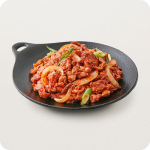

잡담 인기 제육볶음 레시피 재료 : 돼지앞다리살 350g, 대파 1.5줄기, 양파 작은것 1개, 양배추 65g, 당근 35g, 청·홍고추 각각1/2개, 진간장(2), 황설탕(2), 고추장듬뿍(1), 고춧가루(1), 다진마늘(1), 참기름(1), 후춧가루 기호껏, 식용유(3), 물 1/2컵(90ml)  농담곰 댓글 1 개 조회 22 178 1분 전 잡담 Aimyon - marigold 노래 들어본 사람! 유튜브 알고리즘으로 우연히 들었는데 정신차리니까 이틀내내 이 노래만 듣고 있어 이 노래 뭐야? 부두교의 주술 같은 거야? 안 들어본 사람 있으면 들어봐.. 소름돋음.. ㅇㅇㅇㅇㅇㅇㅇㅇㅇㅇㅇㅇㅇㅇㅇㅇㅇㅇㅇㅇㅇㅇㅇㅇㅇㅇㅇㅇㅇㅇㅇㅇㅇㅇㅇㅇㅇㅇㅇㅇㅇㅇㅇㅇㅇㅇㅇㅇㅇㅇㅇㅇㅇㅇㅇㅇㅇㅇㅇㅇㅇㅇㅇㅇㅇㅇㅇㅇㅇㅇㅇㅇㅇㅇㅇㅇㅇㅇㅇㅇㅇㅇㅇㅇㅇㅇㅇㅇㅇㅇㅇㅇㅇㅇㅇㅇㅇㅇㅇㅇㅇㅇㅇㅇㅇㅇㅇㅇㅇㅇㅇㅇㅇㅇㅇㅇㅇㅇㅇㅇ 키티 댓글 1 개 조회 22 178 1분 전
 178
178